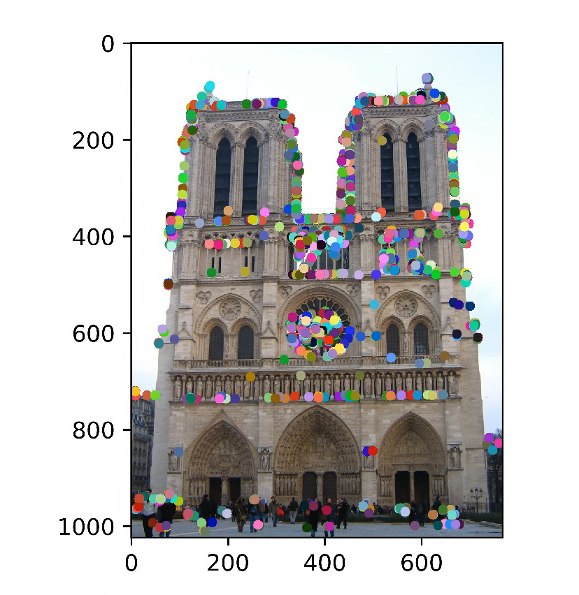

Assignment 2: Local Feature Matching
Fig 1: Notre Dame feature matching with accuracy 86%.
The goal of this assignment is to answer the question below :
- Question: Given a pair of images how can someone find and match the features in both images. What kind of features one should look for? Are the chosen features are enough to describe some view in a set of images?
- Answer: A simple answer is finding the corners in the image and use distance as a similarity matrix to find the maximum similar keypoint.
- Step I: Interest point detection
- Step II: Local feature description
- Step III: Feature Matching
Step I: Interest point detection
This implementation is based on “Harris” corner detector. The main theme is to find the horizontal and vertical derivative of an image and build a correlation matrix. In this project I firstly used sobel operator to find x and y derivate. One important thing is to remember that we are considering a gray scale image only. Once we have x and y derivative, we find the correlation matrix. The correlational matrix has square of x/y derivatives on diagonal axis whereas the off diagonal entries are product of x and y gradient. In the next step we generate a gaussian kernel of size 5 and sigma 1. According to Szeliski 4.1.1 the algorithm to extract the intrest points can be listed as:
-
Step I: Finding the X and Y derivative of the given image
- Step II: Finding auto-correlation matrix “A”, Remember “A” is symmetric around off diagonal entries
- Step III: Convolving each of the entry in correlation matrix with a large gaussian kernel
- Step IV: Eigen value decomposition of matrix
- Step V: Finding local maxima with thresholding and treat them as intrest points
Intrest point detection using Harris Corner detector
#This routine finds the local maxima using Correlation matrix
alpha = 0.04 # tuning parameter for later stage
m, n = img.shape #finding the shape of image (image is grayscale)
# finding X and Y derivative using Sobel
Iy = cv2.Sobel(img,cv2.CV_64F,0,1,ksize=3) # changes in Y direction
Ix = cv2.Sobel(img, cv2.CV_64F, 1, 0, ksize=3) # changes in X direction
# computing auto-correaltion matrix entries, REMEMBER this matrix is symetric around off-diagonal enteries,
# It means I_XY =I_YX
Iyy = Iy * Iy
Ixx = Ix * Ix
Ixy = Ix * Iy
# convolve each entry with a guassian blurr
gaussian_kernel = cv2.getGaussianKernel(ksize=5, sigma=1)# gaussain kernel of size 5
Iyy = cv2.filter2D(Iyy, cv2.CV_64F, gaussian_kernel)
Ixy = cv2.filter2D(Ixy, cv2.CV_64F, gaussian_kernel)
Ixx = cv2.filter2D(Ixx, cv2.CV_64F, gaussian_kernel)
# compute R strength which is nothing but the det(A)-alpha* trace(A) where alpha is choosen to be 0.04
R_strength = (Iyy*Ixx-Ixy**2) - alpha*(Iyy+Ixx)**2
# threshold R with 2% of maximum value in R and disgarding those value
R_strength[R_strength<0.02*np.amax(R_strength)] = 0
R_rect = np.copy(R_strength)
R = []
m, n = R_rect.shape
Rmax = np.amax(R_rect) # finding maximum value of intrest points vector
for y in range(0, m):
for x in range(0, n):
if not R_rect[y, x] == 0: #ignoring the zero values
R.append([int(x), int(y), 255 * R_rect[y, x] / Rmax]) # list R containing x,y position
# with normalize R feature.
In the above routine we implemented the algorithm described above the routine. The design parameters are alpha and the threshold we can choose to maximize the results. Alpha value is chosen to be the 0.04 whereas the threshold is set at 2% of the maximum value of strength matrix R. The below figures are the results of this step. The above routine returns a matrix R which has normalize intrest points with respective x and y coordinates.
One can see there are more intrest points where the image contrast is high, highlighted using yellow rectangles. In the next step the goal to select the evenly distributed intrest points.
Previously we just look for maxima. As we have already seen that the number of maxima are more in high contrast region as compared to low contrast area. This leads to uneven distribution of intrest points. To get evenly distributed intrest points we will take a step forward towards Adaptive non-maximal suppression (ANMS). This method is only to detect the intrest points that are local maximum and shows more response compared to the neighbours within a given radius. The routine for this step is given below:
Adaptive non-maximal suppression (ANMS)
# sort R by R_rect in descending order
R = np.asarray(R)# Converting list to numpy array
R = R[R[:, 2].argsort()] #indirect sorting based on feature values
R = np.flipud(R) #upside down flippling of R
numPts = 2000
radiis = []
# go through R_rect
for i, point in enumerate(R): # i is index and point has point with x,y coordinates, and faeture value
if i == 0:
radius = 9999999.0 # arbitrary large number
thisPtSet = (point[0], point[1], radius)
radiis.append(thisPtSet)
continue
# these are key R intrest points vectors to be compared with "point"
otherPoints = R[0:i, :] # from 0 intrest point to i-1 intrest points
# compute the distance between the current point and all other point
distances = np.sqrt(((otherPoints[:, 0] - point[0]) ** 2 + (otherPoints[:, 1] - point[1]) ** 2))
# the above distance is eucilidean distance
# get the minimum distance
min_dist = np.min(distances) # above all the distance find points with smallest distance
# get the index of the keypoint with min radius
thisPtSet = (point[0], point[1], min_dist)
radiis.append(thisPtSet)
# sort radiis in descending order
radiis = np.asarray(radiis)#converting to numpy array
radiis = radiis[radiis[:, 2].argsort()]#indirect sorting based on last column
radiis = np.flipud(radiis)#upside down flippling of raddiis
#print(radiis.shape)
radiis = radiis[0:numPts, :] #Selected first 2000 points
y = radiis[:, 1]
x = radiis[:, 0]
The above routine uses Euclidean distance to select the interest point evenly. The figure below show newly selected intrest points
|  |
Comparing Figure 2 and 3 we can see that there is less saturation of interest points in the area with high saturation and interest points are more evenly spreaded as compared to simple corner detector. Now that we have our final distinct interest points the next step is to find features.
Step II: Local feature description
Now in the next step we will traverse through all the interest point obtained by the Harris algorithm. We will extract a patch of 16x16 pixels centered on the coordinates of the corner point, for each patch, we will make 4x4 window (in total 16 small 4x4 patches). For each of the patch we will calculate size and direction of each pixel. The next step is calculating histogram bins. For each window our task is to make histogram with angles as x coordinate. Each histogram has 8 bins representing 45 degrees each. The amplitude of the histogram represents the weighted sum of all the pixels in the given window and direction. The code routine below will do the required job:
Feature Descriptors
#############################################################################
# TODO: YOUR CODE HERE #
# If you choose to implement rotation invariance, enabling it should not #
# decrease your matching accuracy. #
#############################################################################
# get sobel filters
sobelY = cv2.Sobel(image, cv2.CV_64F, 0, 1, ksize=3)#applying sobel for Y
sobelX = cv2.Sobel(image, cv2.CV_64F, 1, 0, ksize=3)#applying sobel for X
# compute magnitudes as we;ll as angles of the image
angles = np.arctan2(sobelY, sobelX) #tan-1 of (Y/X)
magnitudes = np.sqrt(sobelX ** 2 + sobelY ** 2)# (x^2+y^2)^(1/2)
fv = []
# go through each intrest point
for index, val in enumerate(x):
x1 = int(x[index])
y1 = int(y[index])
# get patch
magnitudesPatch = magnitudes[y1 - 8:y1 + 8, x1 - 8:x1 + 8] #magnitude of 16x16 patch
anglesPatch = angles[y1 - 8:y1 + 8, x1 - 8:x1 + 8] #angles of 16x16 patch
siftFeatures = []
# use patch for each key point subdividing into 4x4 patch
for i in range(0, 16, 4):
for j in range(0, 16, 4):
# get bins for each patch
anglesPatchBin = anglesPatch[i:i + 4, j:j + 4]#selecting the 4x4 patch of angle
magnitudesPatchBin = magnitudesPatch[i:i + 4, j:j + 4]#selecting the 4x4 patch of magnitude
# compute histogram bins in range of -180 --- 180 (-pi,pi) the number of bins are 8
hist, bins = np.histogram(anglesPatchBin, bins=8, range=(-math.pi, math.pi), weights=magnitudesPatchBin)
siftFeatures.extend(hist)
siftFeatures = np.array(siftFeatures) # convertinf into array
fv.append(siftFeatures)
fv = np.array(fv)# convertinf into array
fv = fv**.7
#############################################################################
# END OF YOUR CODE #
#############################################################################
The above routine will result in feature vectors of (n,128) shape where n represent the maximum number of features selected. Once we have the feature vector we need to match these features with features from other image.
Step III: Feature Matching
We can do that by finding the distance between the features. If the distance is small, we can say it is a match, but there can be possibility where there is more than one similarity is found. To tackle this problem the ratio of two nearest neighbours is considered. If the ratio is greater than a threshold (set to be 80 percent) the points are not considered. For distance computation we use euclidean distance as a measure. This process is done for each feature of the image 1 with respect to image 2. The ratio mechanism looks complex, but it is not that tricky. One can start from sorting the distance computed for image 1 in ascending order. Then take first two smallest distance and find the ratio. If the ratio is greater than 0.8, reject that match. The below code routine serves the purpose.
Feature Matching
#############################################################################
# TODO: YOUR CODE HERE #
#############################################################################
# this is just an arbitrarily small place holder to avoid division by zero
nonzero = 0.000001
confidences = []
matches = []
# go through features1
for i, feature1 in enumerate(features1):
# compute |feature1| that is, the euclidean distance to feature1
feature1_norm = np.linalg.norm(feature1) #cacluate L2 Norm
feature1 = feature1 / (feature1_norm + nonzero) #Normalization of feature1
thisMatches = []
# go through features2
for j, feature2 in enumerate(features2):
# compute |feature2| that is, the euclidean distance to feature2
feature2_norm = np.linalg.norm(feature2) #cacluate L2 Norm
feature2 = feature2 / (feature2_norm + nonzero)#Normalization of feature2
# compute distance between feature1 and feature2
thisDistance = np.sum(abs(feature1 - feature2))# distance between each feature
# add this distance
thisMatch = [i, j, thisDistance]# adding point and distance
thisMatches.append(thisMatch)
# sort matches by their distances in descending order
thisMatches = np.asarray(thisMatches) # converting to numpy array
thisMatches = thisMatches[thisMatches[:, 2].argsort()] # sorting in ascending order
# reject all matches with the distance ratio greater than 0.8
if thisMatches[0, 2] < 0.80 * thisMatches[1, 2]: # select first 2 points and find the ratio of the distance
confidences.append(thisMatches[0, 2])# if the distacne ratio is less than 0.8 consider the point
matches.append(thisMatches[0, 0:2]) # if the distacne ratio is less than 0.8 consider the point
# convert from lsit to numpy array
matches = np.asarray(matches)
confidences = np.asarray(confidences)
# add confidences to matches to sort them together
confidences = np.expand_dims(confidences, axis=1) # changing the shape to make it a column vector
matchAndConfidences = np.concatenate((matches, confidences), axis=1) # concatenate the matches and confidence on axis=1
# sort the two arrays together by distance ratio
matchAndConfidences = matchAndConfidences[matchAndConfidences[:, 2].argsort()]
# separate the two arrays after sorting together
matches = matchAndConfidences[:, 0:2].astype(int)
confidences = matchAndConfidences[:, 2]
#############################################################################
# END OF YOUR CODE #
#############################################################################

The figure above show the location of the features and the lines represent the corresponding matches. In the next section I will discuss result and the changes one can do to improve the resutls.
Results and disscussion
I perform the experiments as per the sequence given in the notebook and save the visual results in result folder. Even though it is simplified version of SIFT but still perform reasonablly. In the figure below I have attached some final results from other image examples.
As evident from the figures above, visually it is difficult to analyze what is right and what is wrong I therefor attach table to analyze the results through accuracy mettric.
| Image | Correct | Incorrect | Total | Accuracy |
|---|---|---|---|---|
| Notre Dame | 86 | 14 | 100 | 0.86 |
| Mount Rushmore | 91 | 9 | 100 | 0.91 |
| Episcopal Gaudi | 2 | 98 | 100 | 0.02 |
One can see the table show promising result. This algorithm provides best performance for Mount Rushmore image with only nine mistakes out of hundred. On the contrary this algorithm suffers badly for Episcopal Gaudi image. There are ways one can improve these results. One way is using features from a scale space but not just from one scale. Also, “Harris” corner detector is not exceptionally good way of detecting corners using Maximum Stable External Area (MSER) may improve the results.
Conclusion
In this assignment the goal was to understand image using features. The features should be distinctive and should be unique. I did not focus on scale variance. The selected features are not scale invariant which is easily achievable if one can implement the difference of gaussian space. From this work I learned that images have distinctive location which are unique even the angel of capturing image changes. In term of application one can think of building an image recognition mechanism built on top of these feature extractor.
Reference:
[1] Lowe, David G. "Distinctive image features from scale-invariant keypoints." International journal of computer vision 60.2 (2004): 91-110.
[2] Harris, Christopher G., and Mike Stephens. "A combined corner and edge detector." Alvey vision conference. Vol. 15. No. 50. 1988.